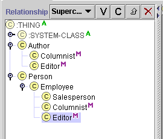

Creating and Naming Classes
Creating and Naming Classes

Once you have created the project, the first thing you need to do to start
constructing your ontology is to add some classes and subclasses. In this
section, you will:
Creating the Author Class
First we will create a new class called Author. An Author is any possible
source of an article, such as a news service or columnist. To create the Author
class:
- First, if you have clicked on any buttons, or explored the Protégé
window, make sure the Classes tab is selected.
- Locate the Class Relationship Pane at the left of the Protégé window.
This pane shows the hierarchy of classes, with the current class
highlighted. Make sure that class :THING is highlighted.

Almost all the classes you create will be created subordinate to :THING.
SYSTEM_CLASS is used by Protégé for defining the structure of various Protégé
forms.
- Click on the Create
 button at the top right of the Class Relationship Pane.
button at the top right of the Class Relationship Pane.
A class is created with a generic name based on the name of the project, such as
tutorial_00000. You can see the
name in the Class Relationship Pane. The class is highlighted to show it is
selected.
- Type Author. A recommended Protégé
convention is to make
the first character of each word in a class name uppercase and the rest lowercase, and to
separate words with an underscore.
- Click again on the highlighted class to display your
change.
If you have trouble renaming the class, look at the Class
Form at the right of the Protégé window. The generic
name of the class you just created should be displayed in the Name field and
highlighted. If the correct generic name is displayed, but not highlighted,
simply click in the Name field to edit the name. If the incorrect name is
displayed, then the wrong class is selected in the Class Relationship Pane.
Click on the class you want to rename.
Creating Subclasses of Author
Now we want to create some subclasses of Author:
- Make sure Author is selected in the Class Relationship
Pane.
- Click the Create
button.
- Rename the class to Columnist.
Notice that when you create the first subclass of a class, a  or
or  icon appears to its left. You can use this icon to display or hide the
subclasses of a class.
icon appears to its left. You can use this icon to display or hide the
subclasses of a class.
To create another subclass of Author:
- Select Author in the Class Relationship Pane. If you do not remember to
select Author, you will create a subclass of Columnist.
- Click the Create
button.
- Rename the class to Editor.
Creating the Person Class
Now we want to create another class, called Person. A Person is any
individual, whether or not they are an Author.
- Select :THING in the Class Relationship Pane. This ensures
that the new class will be at the right level in the class hierarchy.
- Click the Create
button.
- Rename the class to Person.
Creating a Subclass of Person
Now create a subclass of Person, Employee:
- Select Person in the Class Relationship Pane.
- Click the Create
button.
- Rename the new class to Employee.
Creating a Subclass of a Subclass
We are now ready to create some subclasses of Employee. First,
let us create an employee type who is not an Author:
- Select Employee in the Class Relationship Pane.
- Click the Create
button.
- Rename the class to Salesperson.
Adding an Additional Superclass to an Existing Class
We also want a Columnist to be an Employee. Since we have
already created the Columnist class, we do not create it again. Instead, make
the existing Columnist class a subclass of Employee as follows:
- Select Columnist in the Class Relationship Pane. The current superclass of Columnist, Author, is displayed in
the Superclasses pane just below the Class Relationship Pane.
- Click the Add
 button in the Superclasses pane.
button in the Superclasses pane.
A Select Classes dialog box displays the class hierarchy you have developed
so far.
- Click the
icon next to Person to display the subclasses of Person.
- Highlight Employee.
- Click OK.
Columnist now appears in two places in the Class Window: once under Author
and again under Employee. These superclasses are listed in the
Superclasses pane. In addition, an  icon appears after each instantiation of Columnist, to show that it
has multiple parents.
icon appears after each instantiation of Columnist, to show that it
has multiple parents.
You can also add a superclass using drag and drop:
- Select Editor in the Class Relationship Pane.
- Hold down the mouse button and
drag the Editor class over Employee. Employee is
outlined.
- Hold down the Ctrl key and release the mouse button to
drop the subclass.

- If Editor appears under Person, you did not hold down the Ctrl
key long enough while dropping. Delete the superclass by clicking on the Remove
 button in the Superclasses Pane while Person is highlighted, then try again.
button in the Superclasses Pane while Person is highlighted, then try again.
You have now created several classes and given two classes
multiple superclasses. You are now ready to assign some attributes to the
classes you have created, by creating slots. This is covered in the next
section.
Next: Creating and Naming Slots
Getting Started With Protégé